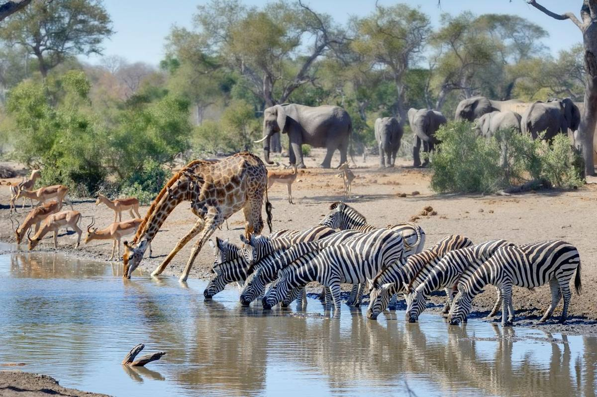

Kruger National Park
Kruger National Park is one of Africa’s largest game reserves and a top destination for wildlife lovers. Home to the Big Five—lion, leopard, elephant, buffalo, and rhinoceros—visitors can enjoy unforgettable safari experiences in a breathtaking natural setting.
Best times to visit are during the dry winter months when animals gather around waterholes, making sightings easier. Guided safaris, self-drive routes, and luxury lodges provide a range of experiences for travelers seeking adventure, photography, or relaxation in the wild.